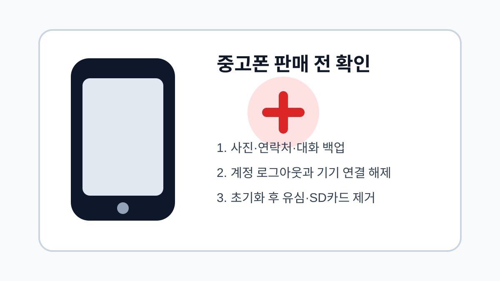

중고폰 판매 전 개인정보 지우는 순서
중고폰을 판매하거나 넘기기 전 백업, 로그아웃, 초기화, 유심 제거를 순서대로 확인합니다.

중고폰을 팔기 전에는 단순히 사진을 지우는 것만으로 충분하지 않습니다. 계정, 인증서, 메신저, 다운로드 파일, 브라우저 기록이 남아 있을 수 있습니다. 안전하게 넘기려면 백업을 먼저 끝내고 계정 로그아웃과 초기화를 순서대로 진행해야 합니다.
백업 후 로그아웃
사진, 연락처, 메신저 대화가 새 기기에서 보이는지 먼저 확인합니다. 그다음 Google 계정이나 Apple ID, 삼성 계정, 카카오 계정 등 주요 계정에서 로그아웃합니다. 계정 잠금이 남아 있으면 새 사용자가 기기를 설정하지 못할 수 있습니다.
초기화와 유심 제거
공장 초기화를 진행한 뒤 처음 설정 화면이 나오는지 확인합니다. 유심과 외장 메모리카드가 남아 있지 않은지도 봐야 합니다. 외장 메모리카드에는 사진이나 문서가 남아 있을 수 있으므로 반드시 분리합니다.
| 순서 | 작업 | 주의점 |
|---|---|---|
| 1 | 자료 백업 | 새 기기에서 확인 |
| 2 | 계정 로그아웃 | 기기 잠금 방지 |
| 3 | 공장 초기화 | 전원 충분히 확보 |
| 4 | 유심/메모리 제거 | 개인정보 확인 |
계정과 개인정보를 지키는 최종 점검
- 새 기기에서 사진과 연락처가 보이는지 확인하기
- 주요 계정에서 로그아웃하기
- 공장 초기화 후 첫 설정 화면 확인하기
- 유심과 외장 메모리카드 제거하기
- 거래 전 기기 잠금이 풀렸는지 확인하기
중고폰 판매는 개인정보 보호가 가장 중요합니다. 거래 직전 서두르지 말고 체크리스트를 따라 확인하면 불필요한 위험을 줄일 수 있습니다.
중고폰 판매 전 실제 확인 상황
중고폰은 사진과 연락처만 지워도 안전하다고 생각하기 쉽지만, 계정 잠금과 결제 앱, 메신저 백업, 유심 정보가 함께 남을 수 있습니다. 판매 전에는 계정 로그아웃과 초기화 순서를 맞춰야 구매자도 정상 사용이 가능합니다.
중고폰 초기화 전 가장 큰 실수
구글 계정이나 Apple ID를 해제하지 않고 초기화하면 기기 잠금이 남아 거래 문제가 생길 수 있습니다. 백업, 로그아웃, 기기 찾기 해제, 초기화, 재부팅 후 첫 화면 확인까지 마쳐야 개인정보 위험을 줄일 수 있습니다.
중고폰 개인정보 삭제 관련 설정을 먼저 확인해야 하는 이유
중고폰 판매 전에는 초기화 버튼을 누르기 전에 백업부터 확인해야 합니다. 사진, 연락처, 인증 앱, 메신저 대화, 금융 앱 설정은 초기화 후 되돌리기 어렵습니다. 다른 기기나 클라우드에서 실제로 파일이 열리는지 확인한 다음 계정 로그아웃과 초기화를 진행하는 순서가 안전합니다.
중고폰 개인정보 삭제에서 자주 생기는 실수
공장 초기화를 해도 유심, SD카드, 케이스 안쪽 보관물, 제조사 계정 연결은 따로 남을 수 있습니다. 특히 기기 찾기 기능이나 활성화 잠금이 켜져 있으면 구매자가 기기를 다시 사용할 수 없을 수도 있으므로, 판매 전 본인 계정에서 해당 기기가 제거되었는지 확인해야 합니다.
중고폰 개인정보 삭제 점검 후 다시 볼 부분
거래 직전에는 초기화가 끝난 화면에서 다시 시작 설정 화면이 나오는지 확인하세요. 사진 앱, 파일 앱, 메신저가 자동 로그인 상태로 남아 있지 않은지 보는 것도 중요합니다. 개인정보 삭제는 판매 가격보다 우선해야 하는 절차입니다.